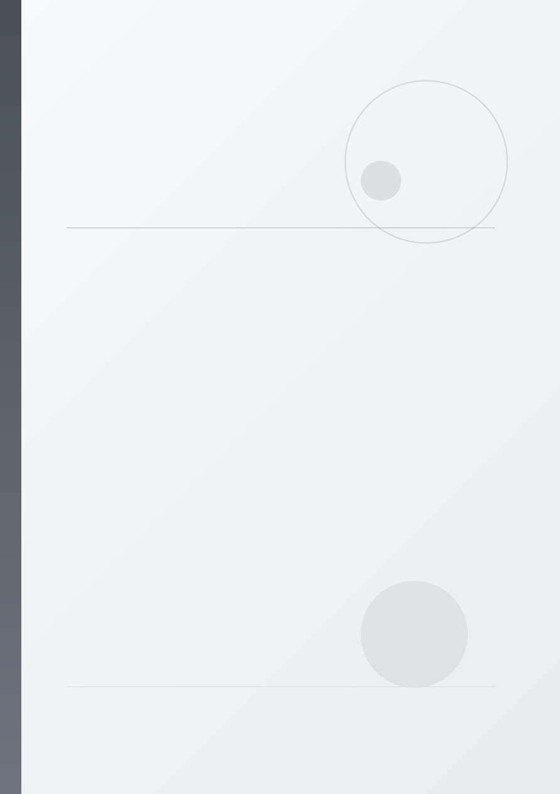

Especificacion Funcional y Reglas
de Negocio
Sistema de Comandas por Voz con Reconocimiento Offline VOSK
Interfaz 100% Dictada por Voz para Cocina y Comedor
Documento: EF-Comandas-VOSK-v2.0
Fecha: Junio 2026
Revision: v2.0 (Modificacion de Alcance)
Plataforma: PHP / MariaDB / Ubuntu 22.04 LTS
Documento de especificacion funcional con reglas de negocio. Incluye modificaciones de alcance: interfaz
100% por voz para cocineros y meseros mediante diademas, sistema KDS con altavoz, y cierre de cuenta
dictado por voz.